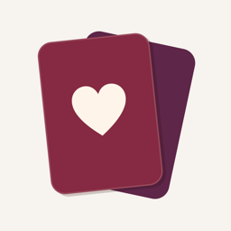

Life DinnerHelp & contact
One evening a month, just for the two of you.
Questions, feedback or found a bug? Write to me at {{EMAIL}}. I usually reply within a few days.
Where is our data?
Only on your iPhone. No account, no cloud, no tracking. Details in the privacy policy.
Do we both need the app?
No. Life Dinner runs on one iPhone that you share at the table – all other phones stay away. You can send your partner the date as a calendar file.
We got a new iPhone. How do we keep everything?
Restore your new iPhone from a backup (iCloud or computer). You can also save your memories with “Export memories” in the settings.
The reminder doesn’t show up.
Check in Settings › Notifications › Life Dinner that notifications are allowed, and that a date is set for your next Life Dinner.
How do we change the language?
In the app’s settings, under “Language”.
Does Life Dinner cost anything?
No. The app is free, without ads.
Hilfe & Kontakt
Ein Abend im Monat, nur für euch zwei.
Fragen, Feedback oder einen Fehler gefunden? Schreibt mir an {{EMAIL}}. Ich antworte meist innerhalb weniger Tage.
Wo liegen unsere Daten?
Nur auf eurem iPhone. Kein Konto, keine Cloud, kein Tracking. Mehr dazu in der Datenschutzerklärung.
Brauchen wir die App beide?
Nein. Life Dinner läuft auf einem iPhone, das ihr am Tisch gemeinsam nutzt – alle anderen Handys bleiben weg. Den Termin könnt ihr eurem Partner als Kalenderdatei schicken.
Wir haben ein neues iPhone. Wie nehmen wir alles mit?
Stellt das neue iPhone aus einem Backup wieder her (iCloud oder Computer). Eure Erinnerungen könnt ihr außerdem mit „Erinnerungen exportieren“ in den Einstellungen sichern.
Die Erinnerung kommt nicht.
Prüft unter Einstellungen › Mitteilungen › Life Dinner, ob Mitteilungen erlaubt sind, und ob für euer nächstes Life Dinner ein Termin eingetragen ist.
Wie stellen wir die Sprache um?
In den Einstellungen der App unter „Sprache“.
Kostet Life Dinner etwas?
Nein. Die App ist kostenlos und ohne Werbung.
Ayuda y contacto
Una noche al mes, solo para vosotros dos.
¿Preguntas, comentarios o un error? Escribidme a {{EMAIL}}. Suelo responder en pocos días.
¿Dónde están nuestros datos?
Solo en vuestro iPhone. Sin cuenta, sin nube, sin rastreo. Más detalles en la política de privacidad.
¿Necesitamos la app los dos?
No. Life Dinner funciona en un solo iPhone que compartís en la mesa; los demás móviles, fuera. Podéis enviar la fecha a vuestra pareja como archivo de calendario.
Tenemos un iPhone nuevo. ¿Cómo lo conservamos todo?
Restaurad el iPhone nuevo desde una copia de seguridad (iCloud u ordenador). También podéis guardar vuestros recuerdos con «Exportar recuerdos» en los ajustes.
No llega el recordatorio.
Comprobad en Ajustes › Notificaciones › Life Dinner que las notificaciones estén permitidas y que vuestra próxima Life Dinner tenga fecha.
¿Cómo cambiamos el idioma?
En los ajustes de la app, en «Idioma».
¿Life Dinner cuesta algo?
No. La app es gratuita y sin anuncios.
Aiuto e contatti
Una sera al mese, solo per voi due.
Domande, feedback o un errore? Scrivetemi a {{EMAIL}}. Di solito rispondo entro pochi giorni.
Dove sono i nostri dati?
Solo sul vostro iPhone. Nessun account, nessun cloud, nessun tracciamento. Dettagli nell’informativa sulla privacy.
Ci serve l’app a tutti e due?
No. Life Dinner funziona su un solo iPhone che usate insieme a tavola: tutti gli altri telefoni restano via. Potete mandare la data al partner come file di calendario.
Abbiamo un iPhone nuovo. Come teniamo tutto?
Ripristinate il nuovo iPhone da un backup (iCloud o computer). Potete anche salvare i vostri ricordi con «Esporta i ricordi» nelle impostazioni.
Il promemoria non arriva.
Controllate in Impostazioni › Notifiche › Life Dinner che le notifiche siano consentite e che il vostro prossimo Life Dinner abbia una data.
Come cambiamo la lingua?
Nelle impostazioni dell’app, alla voce «Lingua».
Life Dinner costa qualcosa?
No. L’app è gratuita e senza pubblicità.
Aide et contact
Un soir par mois, rien qu’à vous deux.
Une question, un avis ou un bug ? Écrivez-moi à {{EMAIL}}. Je réponds en général sous quelques jours.
Où sont nos données ?
Uniquement sur votre iPhone. Pas de compte, pas de cloud, pas de pistage. Plus de détails dans la politique de confidentialité.
Faut-il l’app sur nos deux téléphones ?
Non. Life Dinner fonctionne sur un seul iPhone que vous partagez à table : tous les autres téléphones restent rangés. Vous pouvez envoyer la date à votre partenaire sous forme de fichier de calendrier.
Nous avons un nouvel iPhone. Comment tout garder ?
Restaurez le nouvel iPhone à partir d’une sauvegarde (iCloud ou ordinateur). Vous pouvez aussi garder vos souvenirs avec « Exporter les souvenirs » dans les réglages.
Le rappel n’arrive pas.
Vérifiez dans Réglages › Notifications › Life Dinner que les notifications sont autorisées, et qu’une date est prévue pour votre prochain Life Dinner.
Comment changer la langue ?
Dans les réglages de l’app, sous « Langue ».
Life Dinner est-il payant ?
Non. L’app est gratuite et sans publicité.